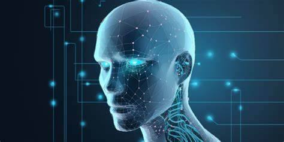

Key Concepts in AI

In relation to artificial intelligence,
the following key concepts can be distinguished:
- Machine Learning (ML): A subset of AI
that allows systems to learn from data and improve
over time without being explicitly programmed.
Examples include recommendation systems (like
Netflix or YouTube) and fraud detection.
- Natural Language Processing (NLP): A branch of AI
focused on enabling machines to understand, interpret,
and generate human language. Applications include voice
assistants like Siri or Alexa, chatbots, and language
translation systems.

- Computer Vision: Enables machines to interpret
and make decisions based on visual data from the world,
such as images and videos. It's widely used in facial
recognition, self-driving cars, and medical imaging.
- Robotics: AI powers robots, giving them the ability
to perform tasks autonomously, often in environments
that are too dangerous or complex for humans.
- Expert Systems: AI-based systems designed to mimic
human expertise in specific domains, such as medical
diagnosis or financial decision-making.
The data in the table shows four main areas of AI application:
natural language processing, computer vision, machine learning,
and reinforcement learning. Each area is related to a specific application,
such as chatbots, medical image analysis systems, or autonomous vehicles.
These applications have a significant impact on various sectors,
improving the efficiency of customer service, medical diagnostics,
protection against financial fraud, and the development of modern
technologies such as self-driving cars.
| Field |
Application |
Example |
Impact |
| Natural Language Processing |
Chatbots |
ChatGPT |
Improves customer service efficiency |
| Computer Vision |
Healthcare |
Medical Imaging |
Enhances diagnostic accuracy |
| Machine Learning |
Finance |
Fraud Detection |
Reduces financial losses |
| Reinforcement Learning |
Robotics |
Autonomous Vehicles |
Enables self-driving technology |